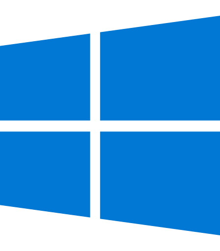

Master en Ciber - Seguridad
Aprende a proteger sistemas, detectar vulnerabilidades y responder a incidentes, preparándote para conseguir empleo en la industria tecnológica.
Aprende a identificar vulnerabilidades, prevenir amenazas y proteger sistemas en un entorno digital cada vez más complejo. Con el Máster en Ciberseguridad de Conquer Blocks, que cuenta con la participación de Chema Alonso, reconocido especialista en seguridad informática, adquirirás conocimientos en hacking ético, análisis de vulnerabilidades, auditorías de seguridad y protección de infraestructuras. Una formación práctica, guiada por profesionales del sector, que te preparará para afrontar desafíos reales y desarrollar tu carrera profesional en ciberseguridad.
Empieza ahora ↗Ventajas
Aprende a tu ritmo
Avanza sin renunciar a tu empleo actual. Nuestra metodología flexible te permite estudiar desde cualquier lugar y adaptar las clases a tus horarios para dominar la tecnología.

Proyectos prácticos
Durante el Master realizarás más de 10 proyectos prácticos que te servirán como curriculum y experiencia demostrable ante las empresas del sector.

Formación online
Nuestra academia es 100% Online, tendrás acceso por tiempo ilimitado al curso y contarás con el seguimiento, las tutorías y las clases en directo que imparte nuestro equipo.

Soporte Personalizado
No estarás solo en el proceso. Contarás con mentorías 1:1, profesores activos en la industria y nuestra comunidad en Discord para asegurar que nunca te estanques al aprender.

Conviértete en el protector del mundo digital.
Especialízate en Ciber Seguridad con una formación práctica y aplicada, guiada por profesionales activos en la industria.
La creciente amenaza de ciberataques hace que los expertos en ciberseguridad sean esenciales. Con nuestro Máster en Ciberseguridad, obtendrás las habilidades necesarias para proteger infraestructuras digitales en el mundo actual.Con la participación especial de Chema Alonso en la cración y desarrollo de este Master.
Skills & programas
Descubre las habilidades y competencias que desarrollarás a lo largo de tu formación. Con nuestro Master adquirirás las skills necesarias para destacar en el sector tecnológico




Plan de Estudio
Explora un temario completo, actualizado y orientado al mundo profesional, que combina teoría, práctica y proyectos reales. Avanza a tu ritmo, domina las tecnologías más demandadas y desarrolla las habilidades necesarias para impulsar tu futuro en el sector tecnológico.
Introducción al Máster
01 · Presentación y bienvenida
02 · Metodología de aprendizaje
03 · Funcionamiento Master
Seguridad de la Información
04 · Introducción al modulo
05 · Fundamentos
06 · Criptografia aplicada
07 · Teoría de redes y comunicaciones
Hardening (windows y linux)
08 · Endurecimiento de sistemas
09 · Fortificación de datos
08 · Fortificación de Windows
09 · Fortificación de GNU/Linux
10 · Fortificación de servicios
Hacking Ético
11 · Introducción
12 · Recopilación de información
13 · Auditoria de sistemas I
14 · Auditoria de sistemas II
15 · Auditoria de Apps Web
16 · Vulnerabilidades
IA Aplicada a Ciberseguridad
17 · Introduccion
18 · IA detección de amenazas
19 · Análisis de vulnerabilidades
20 · Automatización defensiva
21 · Casos prácticos
Docker & Python
22 · Introducción
23 · Contenedores y entornos
24 · Python
25 · Automatización de seguridad
26 · Desarrollo de herramientas
Ingeniería Social
27 · Introducción
28 · Manipulación y técnicas de ataque
29 · Reconocimiento de intentos de engaño
30 · Automatización de tareas de seguridad
31 · Prevención y detección de ataques
Metodologías ágiles y Scrum
32 · Introducción
33 · Scrum
34 · Python
35 · Lean Startup
Proyectos prácticos incluidos en el Master
En Conquer Blocks, aprender significa poner en práctica tus conocimientos desde el primer día. A través de proyectos reales y desafíos profesionales, desarrollarás habilidades técnicas, ganarás experiencia y construirás un portafolio que enriquecerá tu currículum y mejorará tus oportunidades laborales.
Pentesting en FinTech: Auditoría de Pasarelas de Pago
50+ horas de simulación de ataques con Python, Burp Suite y estándares OWASP.
Blue Team Ops: Mitigación de Ataques Ransomware
40+ horas de análisis forense y defensa de red utilizando SIEM (Splunk) y Wireshark.